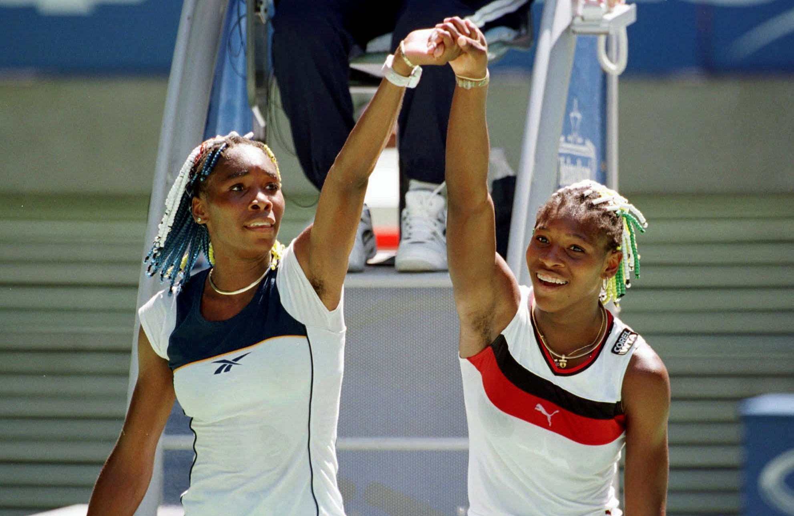
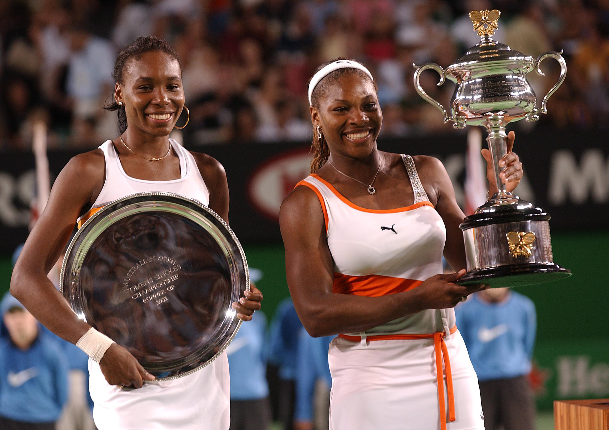
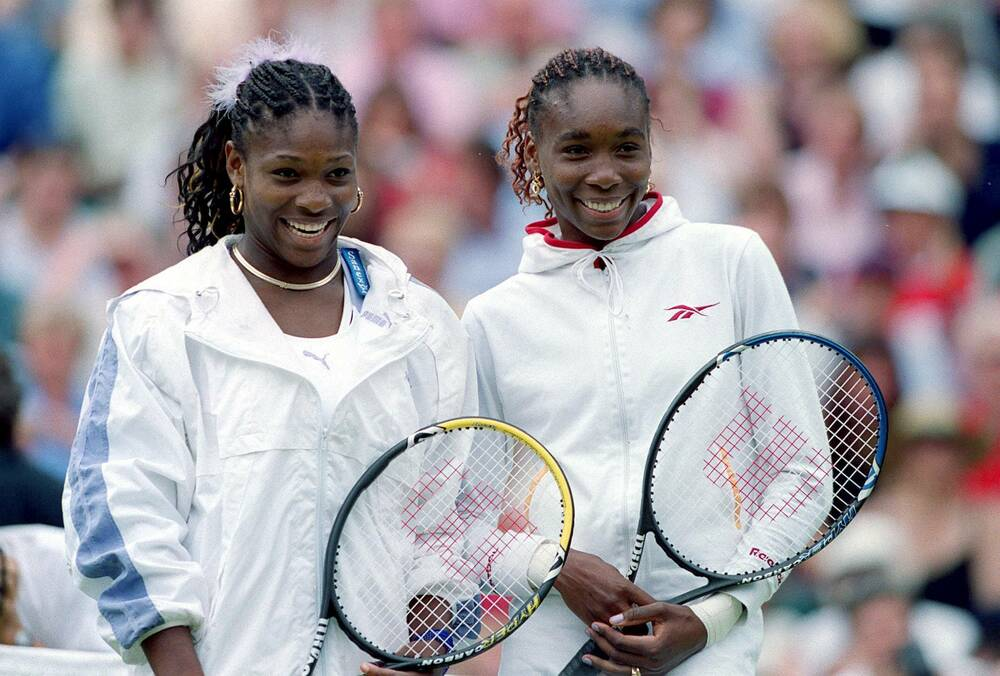

Egy korszakalkotó páros
Serena és Venus Williams a kaliforniai Compton kemény pályáiról indulva jutottak el a világ tetejére, hála édesapjuk, Richard Williams elszántságának és a híres 78 oldalas tervnek. A két nővér dominanciája a női teniszben példátlan; páratlan fizikai erejükkel, technikai tudásukkal és mentális állóképességükkel évtizedeken át uralták a sportágat.
Nem csupán sportolók, hanem globális ikonok is, akik harcoltak az esélyegyenlőségért, a nők jogaiért és inspirálták a fiatalok millióit szerte a világon.
Kiemelkedő mérföldkövek
- 1997: Venus Williams bejut a US Open döntőjébe, ezzel berobban a nemzetközi élmezőnybe.
- 1999: Serena megnyeri élete első Grand Slam-tornáját a US Openen.
- 2002-2003: A "Serena Slam" korszaka, amikor Serena mind a négy nagy GS-tornát megnyeri egymás után, a döntők többségében épp nővérét, Venust legyőzve.
- Olimpiai sikerek: A nővérek összesen 8 olimpiai aranyérmet szereztek (egyéniben és párosban együttvéve).
- >Páros dominancia: Verhetetlen párost alkottak; 14 Grand Slam döntőt játszottak együtt, és mind a 14-et meg is nyerték.
Grand Slam Eredmények (Egyéni) |
||
|---|---|---|
| Torna | Serena Williams (Győzelmek) | Venus Williams (Győzelmek) |
| Australian Open | 7 | 0 (2x Döntős) |
| Roland Garros (French Open) | 3 | 0 (1x Döntős) |
| Wimbledon | 7 | 5 |
| US Open | 6 | 2 |
| Összesen | 23 | 7 |
Galéria


